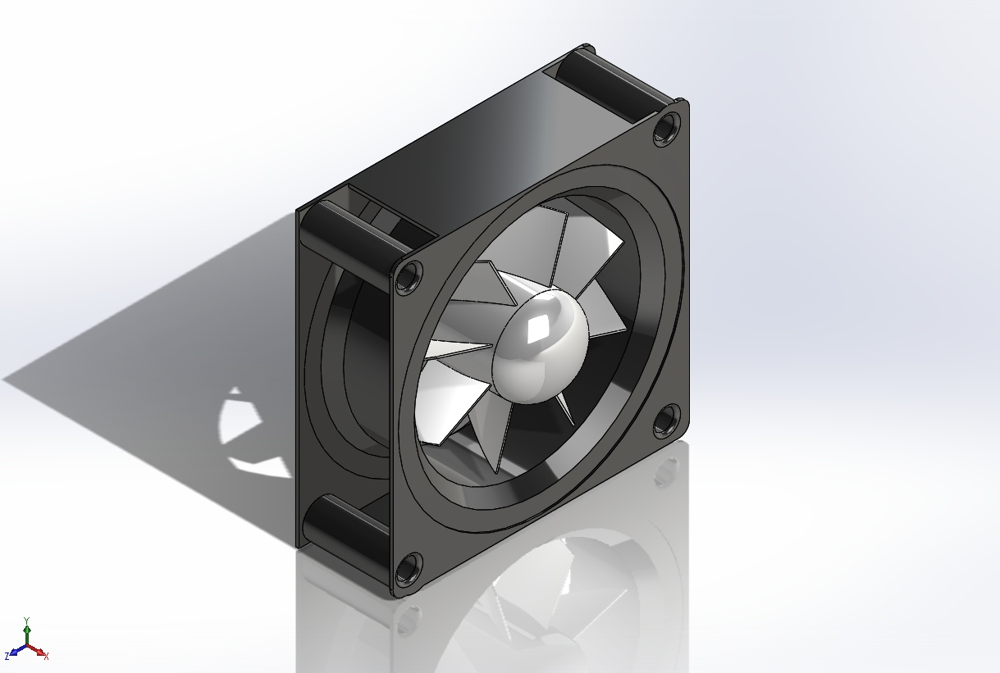
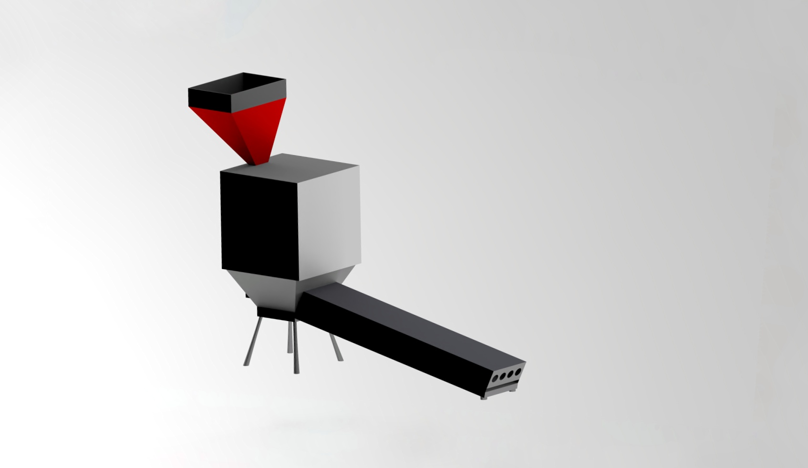

Team MEDextrous presents you "Grain Moisture Eliminator and Separator" in NIMBUS 2021, The Annual Tech Fest of NIT Hamirpur. Grain spoilage is a major issue to tackle with. More than 30% of produce is spoilt in storage. They are left in open to dry and in rural areas, dust and stones separation is done by sieving or handpicking. So, we have created this project for the dust and impurities separation from grains and to eliminate the excess moisture in them.
For Live Demonstraion : Table 49


